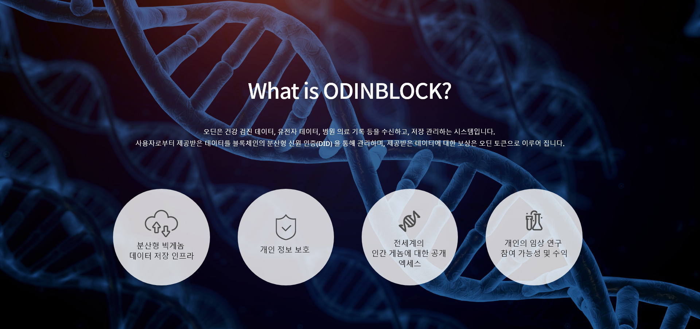
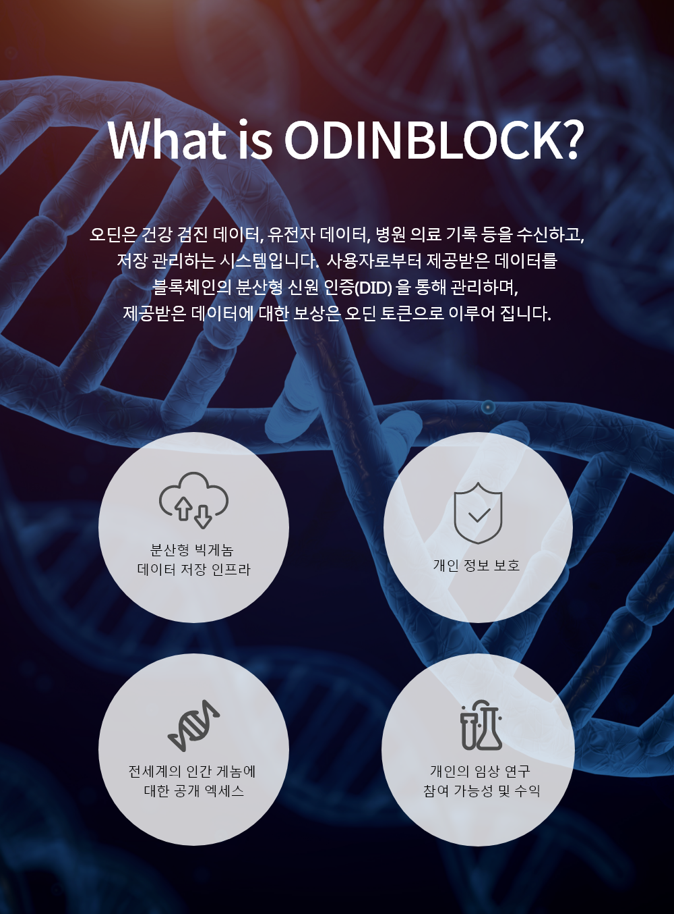
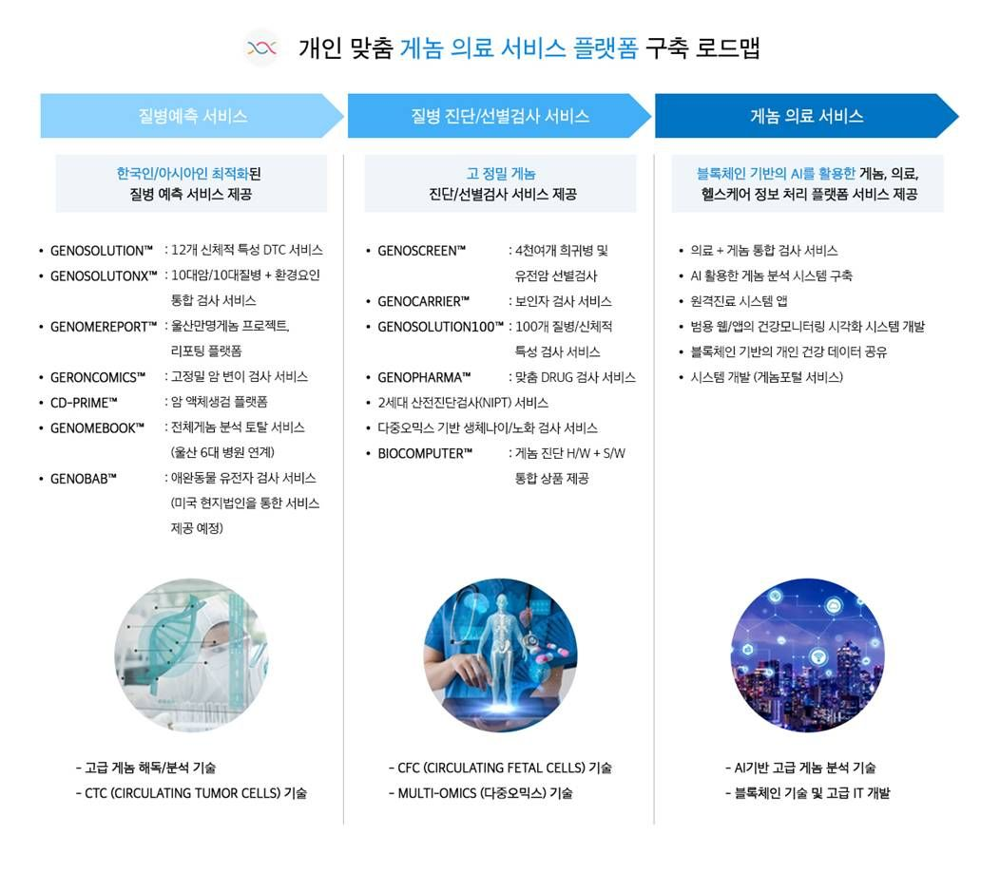
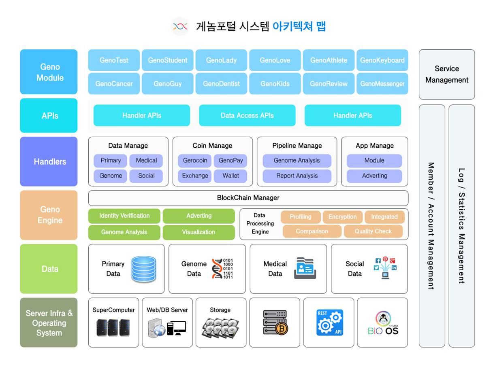
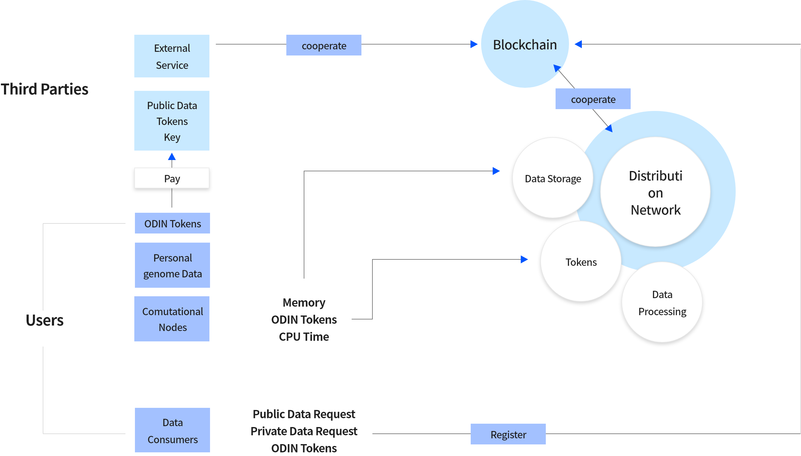
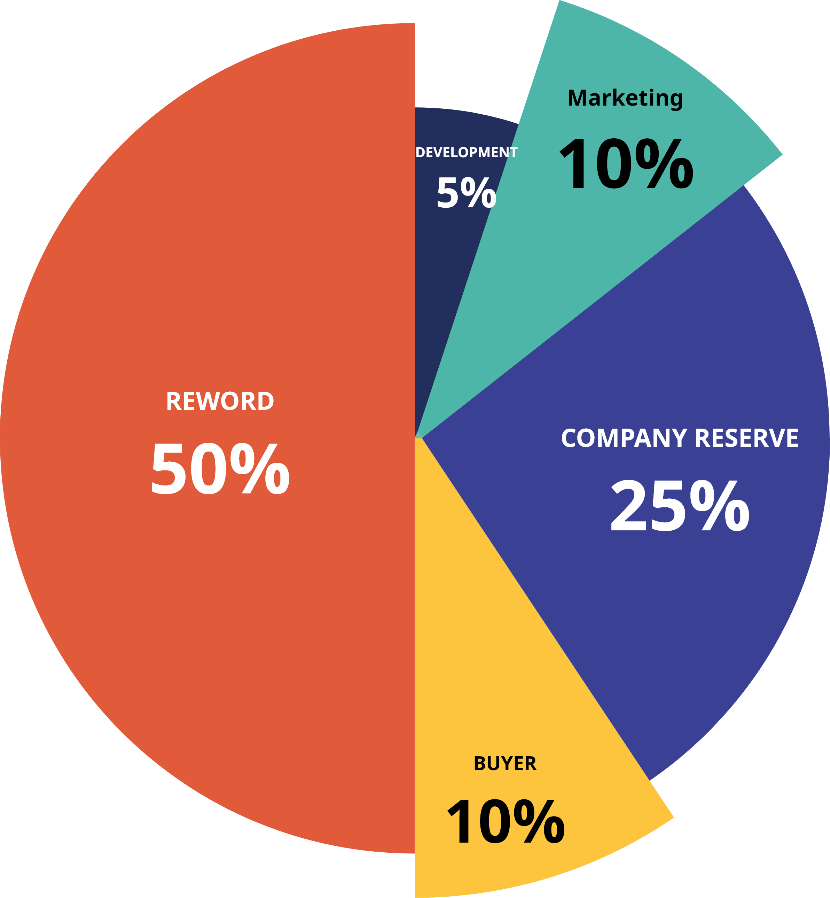
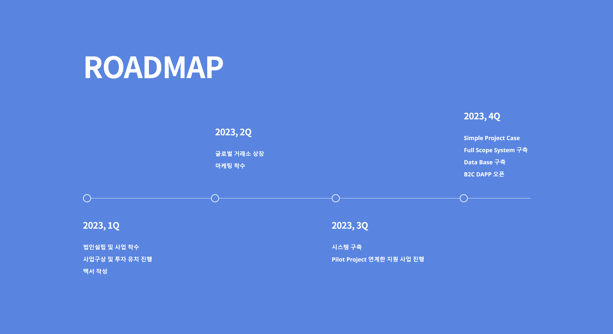
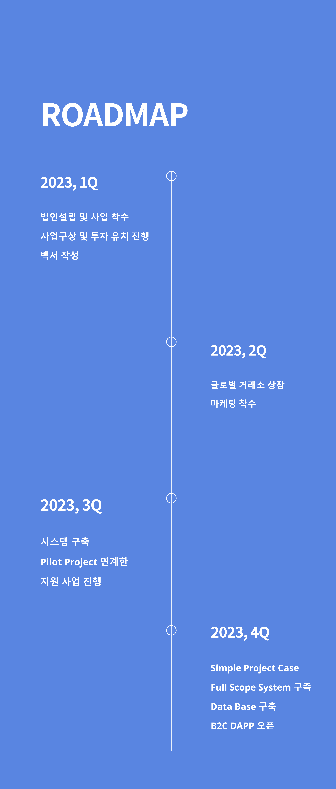

ODINBLOCK
블록체인 건강 데이터 관리 플랫폼

블록체인 건강 데이터 관리 플랫폼
오딘은 블록체인 기반 게놈 데이터베이스입니다. 개인 정보를
유지하면서 액세스 권한을 판매하여 이익을 얻는 생태계를
구성하려고 하며, 사용자들은 자신의 게놈 데이터를 공유하거나
활용할 수 있습니다. 과학 및 의료 기술의 발전을 위해 오딘은 게놈
데이터와 블록체인으로 새로운 경제 환경을 구축하고자 합니다.
게놈(genome)은 유전자(gene)와 염색체(chromosome)를 합쳐 만든 말로 하나의 세포에 들어 있는 DNA의 염기 배열 전체를 뜻한다. 인간의 게놈은 약 30억 개나 되는 염기쌍으로 이루어졌다. 그 중 유전정보를 갖고 있는 유전자는 28,000~30,000개로 밝혀졌습니다. 진화론자들은 이러한 현상에 대해 인간이 다른 동물들에 비해 특별한 존재가 아니며 하등동물에서 진화해 왔음을 보여주는 증거라고 하였습니다. 유전자의 수가 적다는 사실이 왜 진화론을 증거한다는 말인지 되묻는 전문가들의 의견이 많았습니다. 인간의 유전자는 한 개가 여러 기능을 가지고 있거나, 여러 유전자가 협력해 수많은 상호작용을 하는 증거로 해석할 수 있기 때문입니다. 지금의 속도로 분자생물학의 연구가 진행된다면 머지않아 유전병을 근원적으로 치료하는 유전자 치료법과 자기 몸에 맞는 맞춤 약품이 등장하고, 신장과 같은 신체의 구조도 임의로 조절하는 시대가 올 것으로 보입니다.
오딘 프로젝트는 클리노믹스 게놈 유전자지도 기술을 앵커로 하고 블록체인 기술기반으로 전국민 게놈유전자정보의 PTP 블록체인 생태계 사용합니다. 그간 의료 분야에 블록체인 기술을 적용하여 개인의 의료정보 활용을 촉진하는 방안이 새롭게 부각되고 있으며, 의료정보의 보안성 및 투명성 확보, 다양한 산업 영역에의 활용이 이루어지고 있습니다. 이것은 결과적으로 개인 게놈 데이터를 활용한 진단 및 치료의 정확도 향상과 의료 정보 교류에 있어 새로운 프로젝트의 발전을 기대할 수 있습니다. 이미 해외 각국의 의료 관련 업체에서는 정부기관, 병원 등과의 협력을 통하여 블록체인 기술을 도입하고 있으며 안전하고 정확한 의료정보 활용을 시도 하고 있습니다. 이러한 시도는 환자 중심의 의료 실현과 공공성 확대에 기여할 수 있을 것으로 예상되므로 블록체인 기술의 활용에 대한 점진적이고 긍정적인 방향을 수립할 수 있습니다.
오딘 프로젝트는 분산형 블록체인 기반 게놈 데이터베이스입니다. 이 서비스는 게놈 데이터의 관리 가능성을 가지고 있습니다. 개인 정보를 유지하면서 액세스 권한을 판매하여 이익을 얻을 수 있는 생태계를 구성할 수 있으며, 사용자들은 자신의 게놈 데이터를 주도적으로 공유하거나 활용할 수 있습니다. 과학 및 의료 기술의 발전을 위한 오딘 프로젝트는 게놈 데이터와 블록체인을 기반으로 한 새로운 경제 환경을 구성합니다.


게놈 데이터
(1) 게놈 데이터의 기초
게놈 정보 분석의 첫 관문은 개인별 염기서열의 차이에 관한 단일염기다형성(SNP, Single Nucleotide Polymorphism)을 활용하는 것이다. SNP란 A, G, T, C, 네 개의 염기로 이루어진 30억 길이의 염기서열 중 특정 염기 위치가 사람마다 다르게 나타나는 경우, 예를 들어, 특정 위치에서 어떤 사람들은 A이고 다른 사람들은 G인 경우를 말한다. 염기가 서로 다르면 그 유전자 위치에 해당하는 단백질의 구조가 서로 달라질 수 있고 이러한 유전형(genotype)의 차이가 개인마다 다른 키나 피부색 혹은 질병과 같은 표현형(phenotype)의 차이를 설명할 수 있다.
SNP는 30억 게놈 서열의 약 0.1~0.2%에 해당하는 300만~600만의 염기위치에서 발견되는 유전형의 개인차를 의미한다. 염기변이라는 측면에서 SNP는 단일염기 돌연변이(point mutation)와 비슷하지만, 소수대립유전자(minor allele)의 빈도가 1%미만인 경우는 돌연변이로 1% 이상인 경우는 다형성으로 구분하며, 그 의학적 해석에는 큰 차이가 있다. 돌연변이가 단순형질 (simple trait) 희귀 유전질환의 원인으로 지목되는 반면, 다형성은 복잡형질(complex trait)을 보이는 흔한 질병의 발생기전으로 제시되었다.
(2) 게놈 데이터의 대중화
소위 소비자 게놈학 (Direct To Consumer Genomics) 혹은 게놈 소매상 (retail genomics) 산업의 대부분은 이 SNP 정보 분석에 기반하며, 미국의 경우 약 800개의 회사가 경쟁하며 게놈 정보 맞춤의학 보급의 급속한 대중화를 추진하고 있다. 몇 백만 개의 SNP 정보 분석을 넘어, 전체 30억 게놈 서열 정보를 분석하는 상용화 서비스의 대중화도 그리 멀어 보이지 않는다. 23andMe 사는 최근 그 중간단계로 수 만개에 이르는 전체 유전자 서열 정보분석 (Exome Sequencing) 서비스를 준비하고 있다.
(3) 게놈 데이터의 활용
개인 게놈 정보 분석은 신생아 검사에도 활발히 적용되고 있다. 고전적으로는 Genetic Counselling의 영역에 속하던 이 분야에서는 태아나 신생아의 유전적 기형 등을 조기 진단하고 적절한 처치를 하기 위해 다양한 유전자 분석을 수행해 왔다. 최근 게놈 분석 기술의 발달로 좀 더 미세하고 적극적인 검사가 가능해졌다. 한편, 미성년자에 대한 게놈 정보 분석은, 해당 아동 및 청소년에 대한 편견을 가지게 할 가능성과, 이를 통해 양육과 교육에 심대한 영향을 미칠 것을 우려해서, 엄선된 고위험군이 아니면 금지하거나 최소한 자제하자는 주장도 힘을 얻고 있다. 이러한 사전적 스크리닝 테스트는 출산전 가족계획에까지 영향을 미치고 있다. 아직 태어나지 않은 자녀의 유전질환 사전진단 서비스를 제공하기 시작한 미국의 Counsyl 사는 부모의 유전자를 분석하여, 임신 여부도 결정되지 않은 자녀에게서 발생할 수 있는 100여 개의 희귀 유전 질환 위험률을 예측해주는 서비스를 제공한다.
(4) 게놈 데이터와 맞춤의학
게놈 정보의 개인 차이를 바탕으로 탄생한 맞춤의학의 한 분야는 약물게놈학이다. 약물게놈학은 개인별 게놈 다형성에 따라 약물 반응성이 서로 다름을 밝혔고, 특히 약물대사를 담당하는 간 대사효소의 다형성에 대한 유전형 검사는 약물치료의 용량과 시간을 결정하는 핵심정보로 미국 식약처인 FDA 승인을 얻어 실제 적용되고 있다. 혈액의 응고를 막아주는 혈전 치료제 와파린은 매우 약효가 좋으나, 너무 적게 투약하면 혈액 응고를 막지 못하고, 너무 많이 투약하면 출혈성이 증가하여 환자를 위험에 빠뜨린다. 심한 개인차로 적정 투여용량을 결정하기가 어려운 와파린을 간 대사 효소의 유전자 정보 분석에 따른 용량결정 알고리즘의 우수성이 국제 와파린 약물게놈 컨소시움에서 입증되었다. 이러한 성과들을 바탕으로 FDA는 100여개에 이르는 약물에 대해 유전자 정보 분석을 강하게 권고하기에 이르렀다.


사용자는 유전자 및 건강 데이터를 제공하고, 이 데이터는 블록체인의 DID와 매칭하여 관리되며 데이터 보상을 오딘 토큰을 통해 분배합니다.
그리고 저장된 개개인들의 데이터들은 수요 기관이 구매 및 열람이 가능합니다.
수요 기관은 제약회사, 의료기기회사, 보험회사, 식품/화장품 회사, 연구소, 바이오기업 등 일 수 있습니다.

| Token | Description |
|---|---|
| Name | ODINBLOCK TOKEN |
| Ticker | ODINBLOCK |
| Platform | BEP-20 |
| CAP | 5,000,000,000 |


